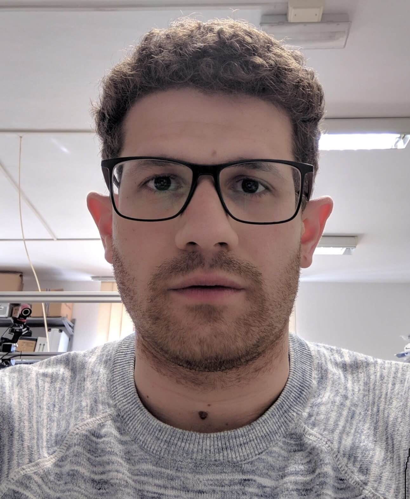

Challenges and Opportunities of Soft Robotics Workshop: Research, Applications, and Education
2020 IEEE/ASME International Conference on Advanced Intelligent Mechatronics (AIM 2020)
Date: July 6th, Monday, 2020
Time: 8:45AM-1:30PM, Eastern Standard Time (New York Time)
The event is free, but it needs pre-registration. Please register online Zoom Meeting through this link: Registration
About the Workshop
During the past few years, advancement in material sciences, additive manufacturing, flexible electronics, sensor/actuators, and intelligent computation/algorithms creates new opportunities for research and development of soft robots. The paradigm shifts from rigid contact towards soft interaction enable not only a safer physical human‐robot interaction but also new forms of robots thanks to passive adaptability and light‐weight design. The full‐day workshop brings experts in the field together to present the state‐of‐the‐art work and discuss the trend of enabling technologies for soft robots that are either biomimetic or for real‐world applications such as advanced tendon actuation, pneumatic artificial muscles, musculoskeletal mechanism, biomimetic locomotion, smart and flexible sensors, compliance control, etc.
Organizers:

Hao Su |

Kevin Chen |

Antonio Di Lallo |
Presentations:
Instability-driven Soft Robots (Prof. Katia Bertoldi)
Magnetic Soft Robots (Prof. Xuanhe Zhao)
Mathematical Modeling of Soft Robots (Prof. Gregory S. Chirikjian)
Micro-aerial Robots Powered by Soft Artificial Muscles (Prof. Kevin Chen)
Research and Education at the Convergence of Frontier Technologies
(Prof. Vikram Kapila)
Evolving the Physical Structure of Compliant, Soft, and Biological Robots
(Prof. Josh Bongard)
Programming Shape Shifting and Locomotion through Anisotropy (Prof. Shu Yang)
Bio-inspired Vine Robots and A Promising New Application (Prof. Elliot W. Hawkes)
Schedule:
| 08:45 -- 09:00 | | Openning Remarks |
| 09:00 -- 09:30 | | Katia Bertoldi, Harvard University: "Instability-driven Soft Robots" |
| 09:30 -- 10:00 | | Xuanhe Zhao, MIT: "Magnetic Soft Robots" |
| 10:00 -- 10:30 | | Gregory S. Chirikjian, NUS and JHU: "Mathematical Modeling of Soft Robots" |
| 10:30 -- 11:00 | | Hao Su, City University of New York: "Untethered High-Performance Soft Robots for |
| Human Augmentation" | |
| 11:00 -- 11:30 | | Kevin Chen, MIT: "Micro-aerial Robots Powered by Soft Artificial Muscles" |
| 11:30 -- 12:00 | | Vikram Kapila, NYU: "Research and Education at the Convergence of Frontier Technologies" |
| 12:00 -- 12:30 | | Josh Bongard, University of Vermont: "Evolving the Physical Structure of Compliant, Soft, |
| and Biological Robots" | |
| 12:30 -- 13:00 | | Shu Yang, University of Pennsylvania: "Programming Shape Shifting and Locomotion |
| through Anisotropy" | |
| 13:00 -- 13:30 | | Elliot W. Hawkes, University of California, Santa Barbara: "Bio-inspired Vine Robots and A |
| Promising New Application" |
Speakers:
Katia Bertoldi, Professor
John A. Paulson School of Engineering & Applied Sciences, Harvard University
"Instability-driven Soft Robots"
Fluidic soft actuators are enlarging the robotics toolbox by providing flexible elements that can display highly complex deformations. Although these actuators are adaptable and inherently safe, their actuation speed is typically slow because the influx of fluid is limited by viscous forces. To overcome this limitation and realize soft actuators capable of rapid movements, we focus on spherical caps that exhibit isochoric snapping when pressurized under volume-controlled conditions. First, we note that this snap-through instability leads to both a sudden release of energy and a fast cap displacement. Inspired by these findings, we investigate the response of actuators that comprise such spherical caps as building blocks and observe the same isochoric snapping mechanism upon inflation. Last, we demonstrate that this instability can be exploited to make these actuators jump even when inflated at a slow rate. Our study provides the foundation for the design of an emerging class of fluidic soft devices that can convert a slow input signal into a fast output deformation.
Bio: Katia Bertoldi is the William and Ami Kuan Danoff Professor of Applied Mechanics at the Harvard John A. Paulson School of Engineering and Applied Sciences (SEAS). Katia’s research contributes to the design of materials with a carefully designed meso-structure that leads to novel effective behavior at the macroscale. She investigates both mechanical and acoustic properties of such structured materials, with a particular focus on harnessing instabilities and strong geometric non-linearities to generate new modes of functionality. Since the properties of the designed architected materials are primarily governed by the geometry of the structure (as opposed to constitutive ingredients at the material level), the principles she discovers are universal and can be applied to systems over a wide range of length scales.
Xuanhe Zhao, Professor
Department of Mechanical Engineering and Department of Civil and Environmental Engineering, Massachusetts Institute of Technology (MIT)
"Magnetic Soft Robots"
While human tissues are mostly soft, wet and bioactive; machines are commonly hard, dry and biologically inert. Bridging human-machine interfaces is of imminent importance in addressing grand challenges in health, security, sustainability and joy of living faced by our society in the 21st century. However, designing human-machine interfaces is extremely challenging, due to the fundamentally contradictory properties of human and machine. In this talk, we will highlight MIT SAMs Lab’s recent development of soft robots that can potentially perform various tasks inside human body. The soft robots are constructed by 3D printing of a new biocompatible magneto-active polymer into various structures. Our approach is based on direct ink writing of an elastomer composite containing ferromagnetic microparticles. By applying a magnetic field on the dispensing nozzle while printing, we make the particles reoriented along the applied field to impart patterned magnetic polarity to printed filaments. This method allows us to theoretically and experimentally program ferromagnetic domains in complex 3D-printed soft robots, enabling a set of unprecedented functions including crawling, jumping, grasping and releasing objects, and transforming among various 3D shapes controlled by applied magnetic fields. The actuation speed and power density of our 3D-printed soft robots with programmed ferromagnetic domains are orders of magnitude greater than existing 3D-printed active materials and structures. We will demonstrate a set of clinically relevant applications uniquely enabled by the 3D-printed magneto-active soft robots.
Bio: Xuanhe Zhao is a professor at MIT. The mission of Zhao Lab is to advance science and technology on the interfaces between humans and machines for addressing grand societal challenges in health and sustainability with integrated expertise in mechanics, materials and biotechnology. A major focus of Zhao Lab's current research is the study and development of soft materials and devices for translational medicine and water treatment. For example, Zhao Lab’s invention of the hydrogel-elastomer tough hybrid is used in tissue phantoms for training doctors and researchers in medical imaging all over US.
Dr. Zhao is the recipient of the NSF CAREER Award, ONR Young Investigator Award, SES Young Investigator Medal, ASME Hughes Young Investigator Award, Adhesion Society’s Young Scientist Award, Materials Today Rising Star Award, and Web of Science Highly Cited Researcher. He held the Hunt Faculty Scholar at Duke University, and the d'Arbeloff Career Development Chair and Noyce Career Development Professorship at MIT.
Gregory S. Chirikjian, Professor
Department of Mechanical Engineering, National University of Singapore and John’s Hopkins University
"Mathematical Modeling of Soft Robots"
Soft and continuum robots have gained remarkable popularity in recent years. A multitude of interesting designs that have inflatable chambers and/or actuated fibers can cause soft robots to contort in a wide variety of ways. Moreover, they have the ability to passively conform to objects for grasping and manipulation with limited needs for active force control. This makes them ideal for physical human-robot interaction tasks, such as those required in assistive and eldercare applications. Despite recent clever designs, the methods used to analyze and predict the performance of soft robots often rely heavily on black-box finite-element (FEM) solvers. In other words, the soft robot is divided up into small voxels, and ancient laws of continuum mechanics are applied, as in engineering practice. Or, in the case of slender continuum filaments that have become popular in medical robotics, backbone curve ideas are adopted from the pre-existing literature on hyper-redundant robots (and sometimes re-branded as something completely new). In this talk, an extension of the `modal approach’ to hyper-redundant robot kinematics introduced in the speaker’s PhD dissertation from almost 30 years ago is combined with his previous work on parameterized closed-form deformations which locally preserve volume. This provides a potential alternative to FEM wherein the essential degrees of freedom are captured for incorporation in real-time control. Local volume preservation is to 3D soft robots what arclength is to 1D continuum filaments. Capturing this constraint in motion primitives provides a way to describe a rich set of deformations to model soft robots, as described in this talk.
Bio:Gregory S. Chirikjian is the head of the mechanical engineering department at the National University of Singapore. Chirikjian’s research interests include robotics, applications of group theory in a variety of engineering disciplines, and the mechanics of biological macromolecules. He is a 1993 National Science Foundation Young Investigator, a 1994 Presidential Faculty Fellow, and a 1996 recipient of the ASME Pi Tau Sigma Gold Medal. In 2008, Chirikjian became a fellow of the ASME, and in 2010, he became a fellow of the IEEE. From 2014-15, he served as a program director for the National Robotics Initiative, which included responsibilities in the Robust Intelligence cluster in the Information and Intelligent Systems Division of CISE at NSF. Chirikjian is the author of more than 250 journal and conference papers and the primary author of three books, including Engineering Applications of Noncommutative Harmonic Analysis (2001) and Stochastic Models, Information Theory, and Lie Groups, Vols. 1+2. (2009, 2011). In 2019 he received the ASME Machine Design Award.
Hao Su, Assistant Professor
Department of Mechanical Engineering, City University of New York, City College
"Untethered High-Performance Soft Robots for Human Augmentation"
Wearable robots for physical collaboration with humans are the new frontier of robotics, but they are typically bulky, obtrusive, and lack intelligence. Soft robots hold great potential to provide a conformal and unobtrusive interface to humans. However, soft robots are generally slow, suffer from low forces, and tethered to energy sources. To overcome those challenges, we develop high-torque density actuators to enable untethered soft robots with high force and high bandwidth for physical human-robot interaction. In addition, we are studying controllers for a variety of versatile wearable soft robots we have developed to augment human performance for able-bodied individuals and enhance mobility for people with lower-limb impairments, including children with cerebral palsy and people with musculoskeletal disorders. We envision our soft robots with learning-based controllers will enable a paradigm shift of wearable robots from lab-bounded rehabilitation machines to ubiquitous personal robots for workplace injury prevention, pediatric and elderly rehabilitation, and home care.
Bio:Hao Su is Irwin Zahn Endowed assistant professor in the Department of Mechanical Engineering at the City University of New York, City College and the Director of the Lab of Biomechatronics and Intelligent Robotics (BIRO). He was a postdoctoral research fellow at Harvard University and the Wyss Institute for Biologically Inspired Engineering. Prior to this role, he was a Research Scientist at Philips Research North America where he designed robots for lung and cardiac surgery. He obtained the Ph.D. degree on Surgical Robotics from the Department of Mechanical Engineering at Worcester Polytechnic Institute. Dr. Su received NSF CAREER Award,Toyota Mobility Challenge Discover Award, the Best Medical Robotics Paper Runner-up Award in the IEEE International Conference on Robotics and Automation (ICRA) and Philips Innovation Transfer Award. He received the Advanced Simulation & Training Award from the Link Foundation and Dr. Richard Schlesinger Award from the American Society for Quality. He holds patents on surgical robotics and socially assistive robots.
Kevin Chen, Assistant Professor
Department of Electrical Engineering and Computer Science, Massachusetts Institute of Technology (MIT)
"Micro-aerial Robots Powered by Soft Artificial Muscles"
Flying insects capable of navigating in highly cluttered natural environments can withstand inflight collisions because of the combination of their low inertia and the resilience of their wings, exoskeletons, and muscles. Current insect-scale (<10 cm, <5 g) aerial robots use rigid microscale actuators, which are typically fragile under external impact. Towards improving collision robustness of micro-aerial robots, we develop the first heavier-than-air aerial robots powered by soft artificial muscles that demonstrate open-loop, passively stable ascending flight as well as closed-loop, hovering flight. First, we design and fabricate lightweight (0.1 g), power-dense (600 W/kg), and high bandwidth (500 Hz) dielectric elastomer actuators (DEA) to drive the robots. Second, we increase actuator output mechanical power and improve its control authority by addressing challenges unique to soft actuators, such as nonlinear transduction and dynamic buckling. Third, we demonstrate our robot can both achieve controlled hovering flight and passive inflight collision recovery. Our work demonstrates how soft actuators can achieve sufficient power density and bandwidth to enable controlled flight, illustrating the vast potential of developing next-generation agile soft robots.
Bio: Kevin Chen is an assistant professor in the Department of Electrical Engineering and Computer Science (EECS) at MIT. He received his PhD in Mechanical Engineering at Harvard University under the supervision of Professor Robert J. Wood. He is a recipient of the best student paper award at the International Conference on Intelligent Robots and Systems (IROS) 2015, a Harvard Teaching Excellence Award, and he was named to the “Forbes 30 Under 30” list in the category of Science. His works have been published in top journals including Nature, Science Robotics, Nature Communications, and the Journal of Fluid Mechanics.
Vikram Kapila, Professor
Department of Mechanical and Aerospace Engineering, NYU
"Research and Education at the Convergence of Frontier Technologies"
In this talk, I will lay out the evolution of research and education activities in MCRL. Slightly over two decades ago, I began by developing a hands-on control-engineering program that slowly transformed into research and education activities focused on mechatronics. A decade ago, with the arrival of smart mobile devices (smartphones and tablets), MCRL focused its efforts on mechatronics and robotics with applications to natural and intuitive human-machine interaction as well as health and wellness. More recently, having observed the rapid progress in several emerging technologies and their potential for broad societal impact, MCRL has transitioned its activities to explore and perform education and research activities at the convergence of robotics, artificial intelligence, augmented reality/virtual reality, and blockchain technologies. In this talk, in addition to sharing an overview of our education activities, I will showcase examples of our research products.
Bio:Vikram Kapila is a Professor of Mechanical and Aerospace Engineering at the NYU Tandon School of Engineering, where he directs a Mechatronics, Controls, and Robotics Laboratory; a Research Experience for Teachers Site in Mechatronics and Entrepreneurship; a DR K-12 and an ITEST STEM education research project; all funded by NSF. He has held visiting positions with the Air Force Research Laboratories in Dayton, OH. His research interests are focused on the convergence of frontier technologies (robotics, artificial intelligence, augmented/virtual reality, and blockchain) and STEM education. He is an author or co-author of more than 240 peer-reviewed scholarly publications, including books, book chapters, journal papers, and conference articles. He is a named inventor on two awarded patents. He has received five teaching awards and a leadership award, all at NYU Tandon. Moreover, he is a recipient of 2014-2015 University Distinguished Teaching Award at NYU. He has mentored more than 50 graduate researchers and more than 60 undergraduate researchers. In addition, he has conducted significant K-12 education, training, mentoring, and outreach activities to integrate engineering concepts in science classrooms and labs of dozens of New York City public schools.
Josh Bongard, Professor
Department of Computer Science, University of Vermont
"Evolving the Physical Structure of Compliant, Soft, and Biological Robots"
In the vast majority of robotics projects (including soft robotics), it is assumed that the physical structure of the robot is designed manually or, at best, parameters of a manually-defined structure are optimized. In this talk I will survey our attempts to automate the design of soft robots from the ground up, and highlight the particular challenges and opportunities of doing so. In particular, I will describe how searching over ‘morphospace’ -- the space of all possible designs -- can have gradients that can be followed toward designs that increasingly facilitate control policy optimization, or improve simulation to reality transfer. I will draw examples from our recent work with flapping wings for ornithopters, voxel-based soft robots, and biological machines created using frog embryo cells.
Bio: Josh Bongard is the Veinott Professor of Computer Science at the University of Vermont and director of the Morphology, Evolution & Cognition Laboratory. His work involves automated design and manufacture of soft-, evolved-, and crowdsourced robots, as well as computer-designed organisms. A PECASE, TR35, and Microsoft New Faculty Fellow award recipient, he has received funding from NSF, NASA, DARPA, ARO and the Sloan Foundation. He is the author of the book How The Body Shapes the Way we Think, the instructor of a reddit-based evolutionary robotics MOOC, and director of the robotics outreach program Twitch Plays Robotics.
Shu Yang, Professor
Department of Materials Science and Engineering and Department of Chemical and Biomolecular Engineering,
University of Pennsylvania
"Programming Shape Shifting and Locomotion through Anisotropy"
Conventional robots are rigid. Although robust, they are often heavy, bulky, tethered and non-adaptive to environmental changes. Soft robots are light-weight, compliant, and adaptive, and can achieve multi-degrees of freedom. However, their softness makes it difficult to control the shape change and locomotion, or lift heavy weights. To precisely and locally control the shapes and agile locomotion with considerable strains, we create thin films and filaments from liquid crystal elastomers (LCEs) and their composites. Through designs of geometric surface patterns, e.g. microchannels, we program the orientational elasticity in LCEs to direct folding of the 2D sheets into 3D shapes, which can be triggered by heat, light, and electric field. We then fabricate tendon-like filaments as high strength, dual-adaptive actuators in soft robotic applications, as well as programmable gaits to achieve different modes of locomotion.
Bio: Shu Yang is a Professor in the Departments of Materials Science & Engineering, and Chemical & Biomolecular Engineering at University of Pennsylvania (Penn). Her group is interested in synthesis, fabrication, and assembly of polymers, liquid crystals, and colloids; investigation of the dynamic tuning of their sizes, shape and assembled structures, and use geometry to create highly flexible, super-conformable, and shape changing materials. Yang received her B.S. degree from Fudan University in 1992, and Ph. D. degree from Cornell University in 1999. She worked at Bell Laboratories, Lucent Technologies as a Member of Technical Staff before joining Penn in 2004. She received George H. Heilmeier Faculty Award for Excellence in Research from Penn Engineering (2015-2016). She is Fellow of Division of Soft Matter (DSOFT) from American Physical Society (APS), Division of Polymeric Materials: Science and Engineering from American Chemical Society (ACS) (2018), Royal Chemical Society (2017), and National Academy of Inventors (2014).
Elliot W. Hawkes, Assistant Professor
Department of Mechanical Engineering,
University of California, Santa Barbara
"Bio-inspired Vine Robots and A Promising New Application"
Natural systems are incredibly robust, adaptable, and capable of handling uncertainty in their environments. These traits are desirable but challenging to realize in engineered robotic systems. I will discuss efforts to learn from nature, specifically vines and other tip-extending organisms, to create a robust method of navigating constrained environments. I will introduce the underlying principles found in this modality of movement, and how they can be translated to an engineered system. While this work began as an effort to address the application area of search and rescue, we have since found potential impact for another, very different problem, for which I will present preliminary results.
Bio: Elliot W. Hawkes is an Assistant Professor of Mechanical Engineering at UCSB. Previously, he completed a postdoctoral fellowship with Prof. Allison Okamura at Stanford University, received his PhD with Prof. Mark Cutkosky, also at Stanford, and worked at the Harvard Microrobotics Lab and the ETH Multi-scale Robotics Lab. He has received a variety of awards and fellowships, and his work has received press from outlets such as the NY Times, BBC, Cell, Science, and the Late Show with Stephen Colbert.